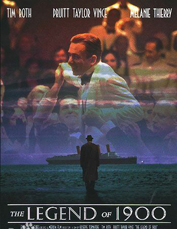
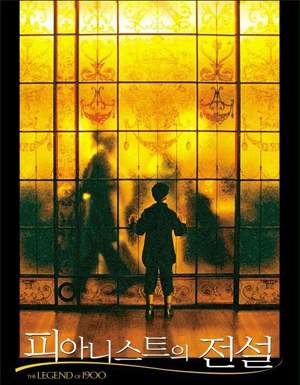

关于配乐
影片的配乐出自大师颜尼欧·莫里克奈之手，他以深情飘逸的典雅曲风，又一次虏获观众与乐迷的心。《海上钢琴师》被誉为是1999年最不容错过的电影原声带之一，并众望所归地荣获了金球奖最佳电影配乐奖。
海总是载满了回忆的，无论它是快乐的，希望或不堪回首……
《The Legend Of 1900 海上钢琴师》叙述了一位诞生于海上的音乐奇才，精彩不凡且极富争议的一生。为《The Legend Of 1900 海上钢琴师》操刀配乐的是世界电影界著名和资深的意大利最具风格的作曲家Ennio Morricone 埃尼奥·莫里康内，从处女作《法西斯分子》到1997年的《西西里的美丽传说》，这位大师参与制作的各国电影配乐已不下400部了，故被音乐界冠以最多产的作曲家美誉。现时已经是70多岁高龄的他，仍拥有丰富的创作灵感和素材，在《The Legend Of 1900 海上钢琴师》里，大师以钢琴为主配合适当的管弦乐和室内乐创作出音色醉人、旋律优美和风格隽永的迷人乐章。其中随性的爵士音符随处可见，出彩的配乐表现出这张大碟决不流俗的态度。同时这张原声大碟还请来 Amedeo Tommasi、Gilda Butta 等钢琴独奏家，演绎 Jelly Roll Morton 及 Scott Joplin 等散拍乐名家的代表作品。原声大碟中，1900在滑动的钢琴的上弹奏、与爵士乐大师斗法机巧跳脱，精妙无比，尤其是他透过舷窗看到暗恋情人即兴创作的那一曲《1900’s Theme》，更是温婉细腻如喁喁私语，被公推为全片最动人乐章。全专辑最具吸引力的当属 Ennio Morricone 埃尼奥·莫里康内 与前 Pink Floyd 乐队大将 Rogers Waters 以及重摇滚乐队 Van Helen 的当家吉他手 Edward Van Helen，三巨头首度合作的电影主题曲《Lost Boys Calling 失去的呼唤》，悠远飘渺，增添几许传奇深度。世纪末回首世纪初叶最动人的海洋传奇巨作已经诞生。
《The Legend Of 1900 海上钢琴师》绝对是1999年最不容错过的电影原声带之一，Ennio Morricone 埃尼奥·莫里康内 以深情飘逸的典雅曲风，又一次掳获观众与乐迷的心。这张原声带有些像是《新天堂乐园》与《四海兄弟》等作品的混合体，管弦的气质承袭了《新天堂乐园》，《四海兄弟》抒情典雅的怀旧色彩，与几许《铁面无私》的缤纷飞扬，同时又加入了《四海兄弟》与《豪情四海》的复古爵士风情，而它又不仅止于此，Ennio Morricone 埃尼奥·莫里康内 在这张作品中也带来许多崭新而且动人的感受。第十轨的《Trailer》，是一个十分优美的主题旋律，细致优雅的旋律性有如 John Barry 的唯美风格，然而当钢琴登场的一刹那，你突然知道这是完全不同的东西，Ennio Morricone 埃尼奥·莫里康内 又一次展现他将不同音乐体材合而为一的手法，在管弦最深刻动人的时刻，随性而至的切入几段即兴浪漫的爵士钢琴，营造出令人惊艳的效果，信手拈来间即将爵士音乐处理的这般潇洒飘逸又深情动人，是十分特别的感觉。
《Trailer》是整部配乐的主轴，同时也是故事的 Love Theme，Ennio Morricone 埃尼奥·莫里康内 在两段恋曲《Playing Love》与《Silent Goodbye》中，将这个主题做了十分优美的演绎，其中《Playing Love》与《Silent Goodbye》的风格与《新天堂乐园》的 Love Theme 表现手法十分接近，《Playing Love》带了一股清新悠然的甜美，而《Silent Goodbye》的弦乐则铺陈出怀念感伤的感触，至于23轨的《Playing Love》是一首细腻抒情的钢琴独奏，充满了深刻动人的款款柔情。另外比较特殊且十分抢眼的主题变化是《The Legend Of The Pianist On The Ocean》，Ennio Morricone 埃尼奥·莫里康内 将主题由遥远的怀念，变化出开阔飞扬，闪亮兴奋的神采，虽然音乐本身和《铁达尼号》全然不同，不过倒有几分让人联想起《铁达尼号》启航时的高昂情绪，交响编曲的处理展现了一如《铁面无私》的奔放与力量，不过感觉上，《The Legend Of 1900 海上钢琴师》有更优美的主题旋律，更丰沛的情感，与更富传奇色彩的悠远美感